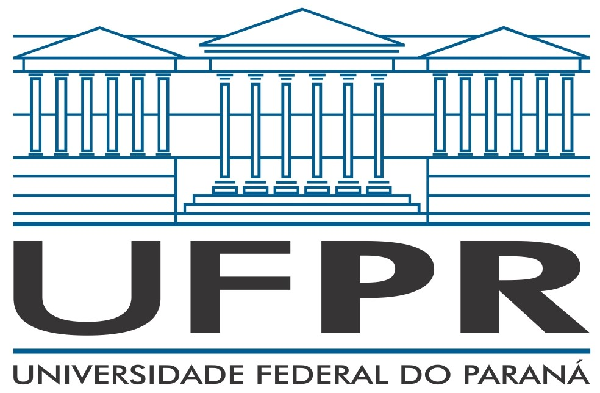

Doutora Eloisa Kmiecik
- Médica Especializada Geneticista
A maior e melhor médica de Curitiba, contando com mais de 500 cirurgias na carreira e inúmeros pacientes satisfeitos. Agende já a sua consulta, não perca seu tempo, saúde é um assunto sério e deve ser tratado com o melhor profissional disponível atualmente...
Eloisa Kmiecik
Currículo:
- Formada pela Universidade Federal do Paraná (UFPR)
- Pós-Doutorada no Instituto de Tecnologia de Massachusetts (MIT)

Consultório:
- Curitiba, Paraná, Brasil